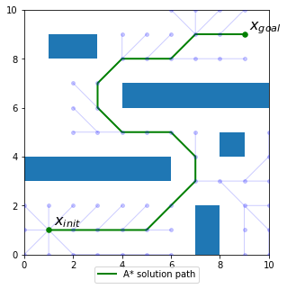
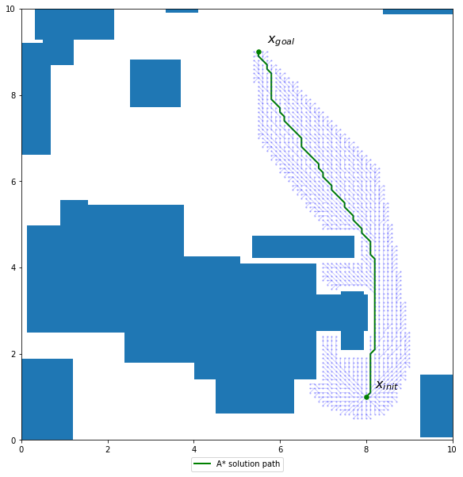
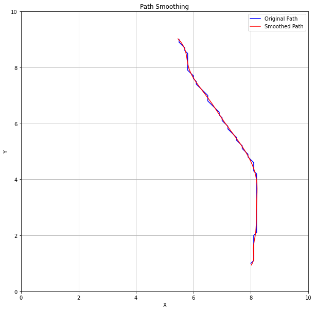
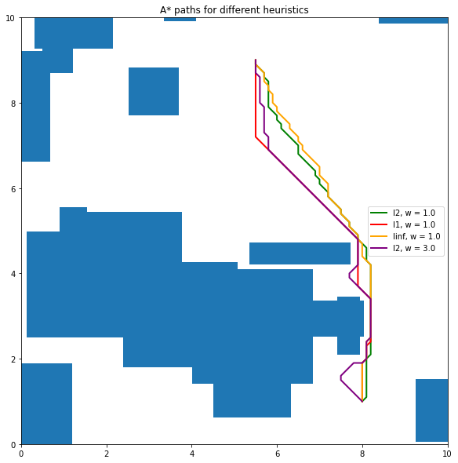
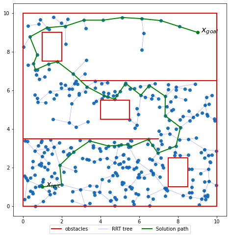
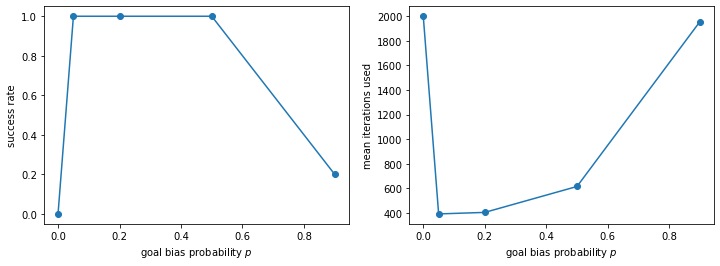

MS Mechanical Engineering student at Stanford University · Double degree with Arts et Métiers Institute of Technology
Path finding and path optimization for an autonomous robot (70 hrs, ongoing)
Stanford University – AA Department · Sept–Dec 2026 · Under the supervision of Prof. S. Bansal
This project is part of the Principles of Robot Autonomy I course at Stanford. The goal is to make a mobile robot (a TurtleBot running on ROS) go from a start point to a goal point in an environment full of obstacles, without hitting any of them and with the best possible trajectory. I coded two families of planners in Python: a grid-based one (A*) and a sampling-based one (RRT), and then I worked on the optimization of the paths they give.
A* path finding
A* explores a grid from the start point and always expands first the node that seems the closest to the goal. I implemented it on an 8-connected grid (the robot can move straight or in diagonal).

A* path in the simple environment

A* path in a random cluttered environment
In the simple environment, the path found is the shortest one possible with this grid. In the cluttered environment, we can see that the whole grid was not explored (the light dots are the explored nodes): the algorithm only spends time in the direction of the goal, and the path still seems to be the fastest one.
Path smoothing
The A* path is made of straight segments with sharp angles, which a real robot cannot follow properly. I smoothed it with a cubic spline, for a desired speed of 0.15 m/s and a smoothing parameter α = 0.1.

A* path (blue) and cubic-spline smoothed path (red)
The smoothed path gives a better trajectory while being even a bit shorter in this case. However, the smoothing has to stay reasonable: the bigger α is, the more the spline is allowed to move away from the nodes. It can then cut corners, miss the start point or the goal point, or even hit an obstacle, as no collision check is run on the smoothed path.
Choosing the heuristic
The heuristic is the way A* estimates the remaining distance to the goal. I compared three of them, and a weighted version where the heuristic counts three times more (w = 3).

A* paths for the different heuristics in the same environment
Heuristic
Weight w
Path length
Nodes expanded
Euclidean (L2)
1.0
9.201
1,091
Manhattan (L1)
1.0
9.201
318
Chebyshev (L∞)
1.0
9.201
1,965
Euclidean (L2)
3.0
9.898
146
With w = 1, the three heuristics find a path of the same length, but not with the same effort: the closer the heuristic is to the true remaining distance, the fewer nodes are needed (318 for L1 against 1,965 for L∞). With w = 3, the path is 7.6% longer but the algorithm expands 7.5 times fewer nodes than with w = 1. It is a trade-off between the quality of the path and the computation time, which matters on an embedded computer.
RRT and shortcutting
The Rapidly-exploring Random Tree (RRT) does not use a grid: it grows a tree by picking random points in the free space until one branch reaches the goal. The path it finds is good but not optimal, so I added a shortcutting step which removes the useless detours.

RRT tree and solution pathPath before (purple) and after (green) shortcutting
The shortcutting gives a clearly shorter path. It would be interesting to apply the smoothing algorithm to it afterward!
Goal bias
With a probability p, the tree tries to grow directly toward the goal instead of toward a random point. I ran 20 trials for each value of p, with at most 2,000 iterations.

Success rate (left) and mean number of iterations (right) for each goal bias p
Goal bias p
Success rate
Mean iterations
0.00
0%
2,000.0
0.05
100%
391.9
0.20
100%
404.2
0.50
100%
615.1
0.90
20%
1,956.7
The best value seems to be near p = 0.05. With p = 0, no direction is prioritized, so it is very unlikely to reach the goal only with randomness. On the opposite, with p = 0.9 the tree nearly only tries to go straight to the goal and has very few chances to explore the other directions needed to go around the obstacles, which explains the 20% success rate.
Next steps
We are now working on the driving control of the robot and on disturbance rejection (PID control, discrete-time systems). This part will be added here once it is finished.